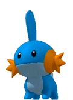

¿Cómo usar la Pokédex?
- Introduce el nombre del Pokémon o su número de identificación en la pantalla verde.
Presiona el botón "Buscar" o la tecla "Enter" cuando estés listo.
- Presiona el botón "R" para buscar un Pokémon al azar.
- Esta Pokédex tiene un narrador integrado, nótese el led azul parpadeante cuando este habla.
- Presiona el botón "Repeat" (color azul) para repetir la última información dicha por el narrador.
- Presiona el botón "Stop" (color rojo) para detener la narración de la Pokédex.
- Presiona los botones blancos ← o →, para buscar al anterior o al siguiente Pokémon numerado.
- Presiona cualquier botón en la primera fila de botones azules (lado derecho, debajo de la pantalla central)
para escuchar datos curiosos y descripciones sobre el Pokemón.
Si algunos botones no reproducen sonido alguno, es debido a que no exite más información al respecto sobre el Pokemón.

¡Disfruta de la Pokédex!
Sitio web creado por: @MartinOtamendiT